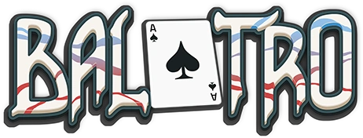

Balatro

| Release Date: | February 20th, 2024 |
| Genre: | Deck Building Rouge-like |
| Developer: | LocalThunk |
| Platform: | Nintendo Switch, Playstation 5, PC, and Mobile |
| Details: | Website |
Balatro is a deck building rouge-like game developed by LocalThunk. The goal of the game is simple, with a deck of normal playing cards, try to play the best poker hands from your current hand to accumulate enough chips to beat the current Blind. This game has been on my radar for a while, as I've constantly have heard positive things about the game. Watched it win Indie Game of the Year and some friends of mine grabbed it and recommended it to me. I was out of town for the holidays and wanted a game to play, and this game felt like the perfect fit for a mobile game.
Gameplay
As mentioned, the goal of the game is to beat the target chips of the current Blind with the best poker hands you can achieve with your deck of playing cards. As you defeat blinds, your current ante will increase, raising the target chips higher and higher. To counter the rising chip values, you visit the store after each round to purchase various upgrades to your deck. There's quite a few options to pick from at the shop, like direct power-ups, consumable augmentations to your deck, or passive abilities for the duration of your run. This cycle of play against the blind, and upgrade your deck continues for 8 antes, which upon beating that you've won the run! You're welcome to continue the run beyond ante 8 to see just how far you can get.
It's a really simple concept and easy to get something going, but there is a huge depth of mechanics here in just how all the different modifiers and power-ups interact with each other. The synergy between these mechanics can be exploited for particular builds, making the later antes a breeze with the right hand. For example, there's some "enchantments" you can put onto your playing cards that'll activate when you leave that card in your hand. Then you can get an ability that allows your enchanted cards in hand to activate twice, allowing you to double-dip on their efficiency. That's just one example of the plethora of combinations you can utilize, which makes each round fun to experiment the abilities with each other.
That's the basic loop of the game, but to give yourself some goals to try to achieve, the game locks various abilities behind some sort of achievement. Some of these you'll unlock naturally while playing the game, others are quite specific that'll require the proper setup to achieve. You may be on a bad run, but then you might get just the right cards needed to complete one of the challenges. After completing a couple of runs, you'll unlock "Challenge Mode", which provide additional rules to the run to give more of challenge to your runs. I haven't attempted any of them yet so I can't talk much about them, but they seem like a nice way to freshen up the gameplay with some custom rules.
Overall Thoughts
This is the perfect mobile game for me. It's easy to start up a new run or pick up where you left off, and is a fun way to pass the time. At the surface level it's easy to understand, as I was able to explain it enough to my parents that even they could understand it, but it has enough depth to it that allows for some crazy combinations to be made. It's a big numbers game, and watching your chip count skyrocket from all your multipliers is so satisfying to watch. I'm not sure how often I'll play it at home, as I tend to play other games on my PC, but this is probably my go-to game while traveling now.